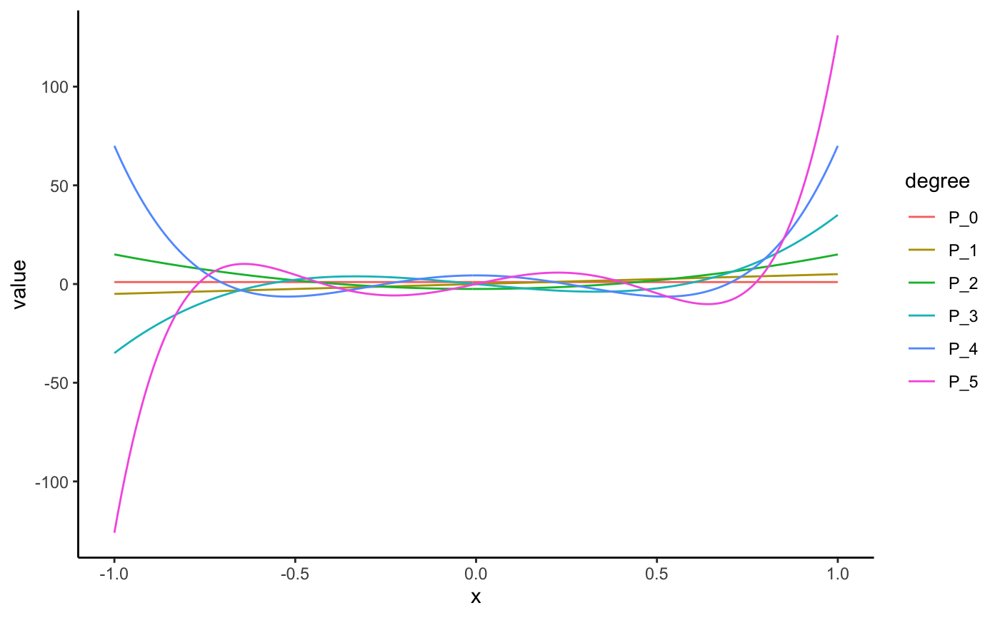
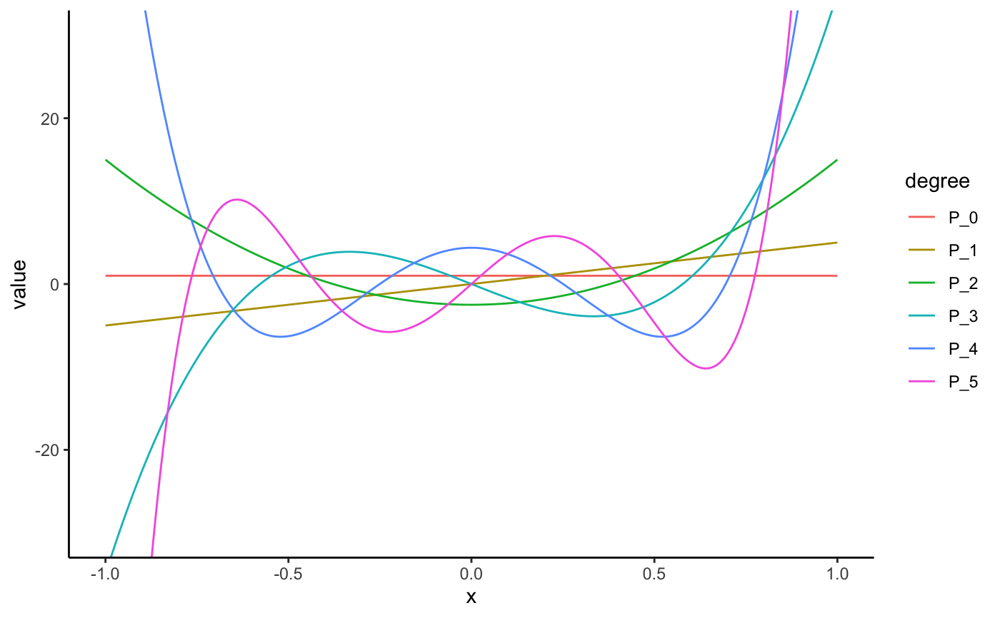

Jacobi polynomials as computed by orthopolynom.
jacobi( degree, alpha = 1, beta = 1, kind = "p", indeterminate = "x", normalized = FALSE )
| degree | degree of polynomial |
|---|---|
| alpha | the first parameter, also called p |
| beta | the second parameter, also called q |
| kind | "g" or "p" |
| indeterminate | indeterminate |
| normalized | provide normalized coefficients |
a mpoly object or mpolyList object
orthopolynom::jacobi.g.polynomials(),
orthopolynom::jacobi.p.polynomials(),
http://en.wikipedia.org/wiki/Jacobi_polynomials
jacobi(0)#> 1jacobi(1)#> 3 xjacobi(2)#> -1.5 + 7.5 x^2jacobi(3)#> -7.5 x + 17.5 x^3jacobi(4)#> 1.875 - 26.25 x^2 + 39.375 x^4jacobi(5)#> 13.125 x - 78.75 x^3 + 86.625 x^5jacobi(6)#> -2.1875 + 59.0625 x^2 - 216.5625 x^4 + 187.6875 x^6jacobi(10, 2, 2, normalized = TRUE)#> -0.802729 + 60.20468 x^2 - 682.3197 x^4 + 2592.815 x^6 - 3889.222 x^8 + 1987.825 x^10jacobi(0:5)#> 1 #> 3 x #> 7.5 x^2 - 1.5 #> 17.5 x^3 - 7.5 x #> 39.375 x^4 - 26.25 x^2 + 1.875 #> 86.625 x^5 - 78.75 x^3 + 13.125 xjacobi(0:5, normalized = TRUE)#> 0.866025403784439 #> 1.936492 x #> 4.050463 x^2 - 0.8100926 #> 8.300979 x^3 - 3.557562 x #> 16.85937 x^4 - 11.23958 x^2 + 0.802827 #> 34.07809 x^5 - 30.98008 x^3 + 5.163347 xjacobi(0:5, kind = "g")#> 1 #> x - 0.5 #> x^2 - x + 0.1666667 #> x^3 - 1.5 x^2 + 0.6 x - 0.05 #> x^4 - 2 x^3 + 1.285714 x^2 - 0.2857143 x + 0.01428571 #> x^5 - 2.5 x^4 + 2.222222 x^3 - 0.8333333 x^2 + 0.1190476 x - 0.003968254jacobi(0:5, indeterminate = "t")#> 1 #> 3 t #> 7.5 t^2 - 1.5 #> 17.5 t^3 - 7.5 t #> 39.375 t^4 - 26.25 t^2 + 1.875 #> 86.625 t^5 - 78.75 t^3 + 13.125 t# visualize the jacobi polynomials library(ggplot2); theme_set(theme_classic()) library(tidyr) s <- seq(-1, 1, length.out = 201) N <- 5 # number of jacobi polynomials to plot (jacPolys <- jacobi(0:N, 2, 2))#> 1 #> 5 x #> 17.5 x^2 - 2.5 #> 52.5 x^3 - 17.5 x #> 144.375 x^4 - 78.75 x^2 + 4.375 #> 375.375 x^5 - 288.75 x^3 + 39.375 xdf <- data.frame(s, as.function(jacPolys)(s)) names(df) <- c("x", paste0("P_", 0:N)) mdf <- gather(df, degree, value, -x) qplot(x, value, data = mdf, geom = "line", color = degree)